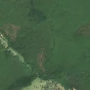
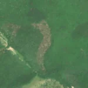

10,4 ha de pădure schimbată lângă Hetea
Între vara lui 2025 și 1 mai 2026, pe aproximativ 10,4 ha de pădure din comuna Ilieni, lângă Hetea, județul Covasna, imaginile Sentinel-2 arată că vegetația a dispărut sau s-a schimbat puternic. În registrul public există o autorizație de tăiere pentru acest loc.
Autorizația de tăiere
cu autorizație
Parcela autorizată acoperă zona, iar autorizația era valabilă când s-a tăiat.
Ce se vede în poze: În poza detaliată zona marcată era acoperită de pădure deasă. În poza «după» apare o fâșie maronie, fără copaci, care iese clar în evidență din pădurea verde din jur, deci arborii au fost tăiați.


Înainte și după: Copernicus Sentinel-2, 10 m pe pixel, conturul zonei cu portocaliu. Poza detaliată (Esri World Imagery) e de acum 1–4 ani: arată ce era acolo înainte, nu tăierea.
Pe scurt
- Identificator
- 20260501_45821_25725
- Locul
- Hetea, comuna Ilieni, județul Covasna (SIRUTA 64425)
- Coordonate (centru)
- 45.82054, 25.72490 · Google Maps · OpenStreetMap
- Suprafața
- 10,4 ha (din pixeli de 10 m; ± câțiva pixeli pe margine)
- Pădurea întreagă
- în vara lui 2025 (de atunci, nori sau iarnă)
- Prima imagine cu schimbarea
- 1 mai 2026
- Imagini în care se vede schimbarea
- 14
- Cât de sigur e semnalul din satelit
- ridicată
- Autorizația cea mai apropiată
- APV 2500129901030 · Ocolul Silvic Hatod S.R.L., valabilă 11 iunie 2025 – 25 decembrie 2025, la 0 m de zonă
- Terenul
- în afara amenajamentelor silvice publicate (pășune, mal de apă sau pădure privată fără amenajament în registru)
- Arie protejată
- Munții Bodoc - Baraolt
- Garda Forestieră
- Brașov
Dacă vrei să verifici sau să sesizezi
- Pădurile din județul Covasna sunt în grija Gărzii Forestiere Brașov, care controlează tăierile și dă amenzile.
- Autorizația găsită în zonă e emisă de Ocolul Silvic Hatod S.R.L..
- Formularul Gărzii Forestiere Naționale primește sesizări și fără nume. Trimite linkul acestei pagini, coordonatele și pozele. Dacă tăierea e în desfășurare, sună la 112.
- Autorizațiile și transporturile de lemn se pot căuta în Inspectorul Pădurii.
Pagina arată ce se vede din satelit și ce scrie în registrul public; nu e o dovadă în sine.
Cum citezi zona
Linkul acestei pagini nu se schimbă. Dacă zona iese vreodată de pe hartă, pagina rămâne, cu data și cu ce știam despre ea.
Pădurea RO, zona 20260501_45821_25725: 10,4 ha, Hetea, comuna Ilieni, județul Covasna; schimbare văzută din satelit între vara lui 2025 și 1 mai 2026. https://iliemihai.github.io/padurea-ro/zona/20260501_45821_25725/ (consultat la [data]). Date: CC BY 4.0.
Datele zonei: GeoJSON · toate zonele: date deschise · licența CC BY 4.0.
Istoricul zonei pe hartă
Starea se poate schimba când registrul publică o autorizație sau când analistul vede poze mai bune. O ținem aici, ca un link citat să arate și ce spuneam atunci.
Pe hartă cel târziu din 5 noiembrie 2026.
- 5 noiembrie 2026 – azi · cu autorizație
Detalii tehnice, pentru verificare
De ce acest nivel de încredere:
- văzută schimbată în 14 imagini diferite
- peste 3 ha
- pădurea din jur e neschimbată
- ultima dată am văzut-o intactă în vara lui 2025 (de atunci, nori sau zăpadă)
- AI-ul vede pădure dispărută
Ce a văzut analistul cu context: Poza detaliată din 03.2025 arată coronament închis pe tot conturul (coronament 99% în 2000, WorldCover copaci 100%). În Sentinel-2 «după» (06.2026) apare o fâșie curbată, de culoare brun-roz, cu margini destul de clare, în timp ce pădurea din jur rămâne verde. Începutul tăierii se vede deja în imaginea din 08.2025, în partea de jos a conturului. Fâșia nu continuă ca drum în afara conturului, iar vegetația din jur nu are aceeași nuanță, deci nu este efect de sezon. Registrul de autorizații nu acoperă zona (neacoperit, suprapunere 0%), ceea ce merită verificat, dar este doar un indiciu, nu o dovadă de ilegalitate.
- Placa Sentinel-2
- 35TLL
- NDVI de referință
- 0.83
- NBR de referință
- 0.56
- Scăderea în pădurea din jur
- 0.02
- Persistență
- 1.0
- NDVI / NBR după
- 0.429 / 0.081
- Analistul de zi (model)
- taiere · 0.8 · claude-haiku-5-5
- Analistul cu context (model)
- taiere_rasa · 0.75
Cum se calculează fiecare: metodologia.
Pune harta zonei într-un articol
Copiază codul în articol (merge în majoritatea site-urilor de știri). Sau pune doar linkul: WhatsApp, Facebook și X arată singure poza zonei.